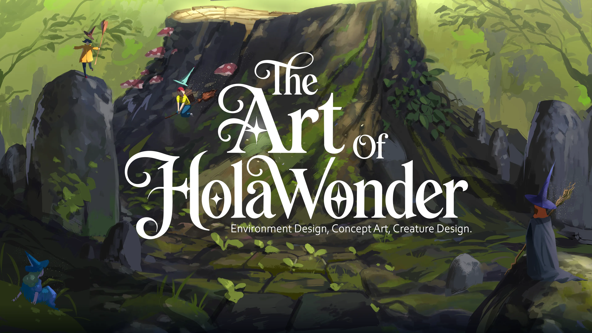
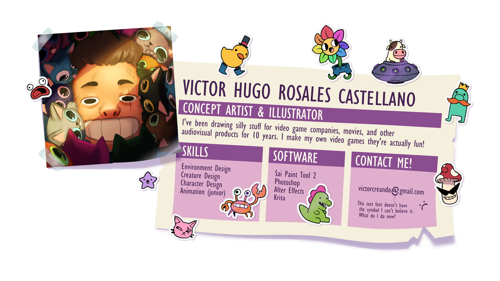
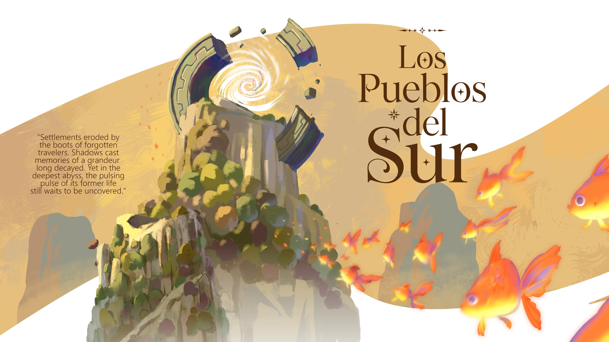
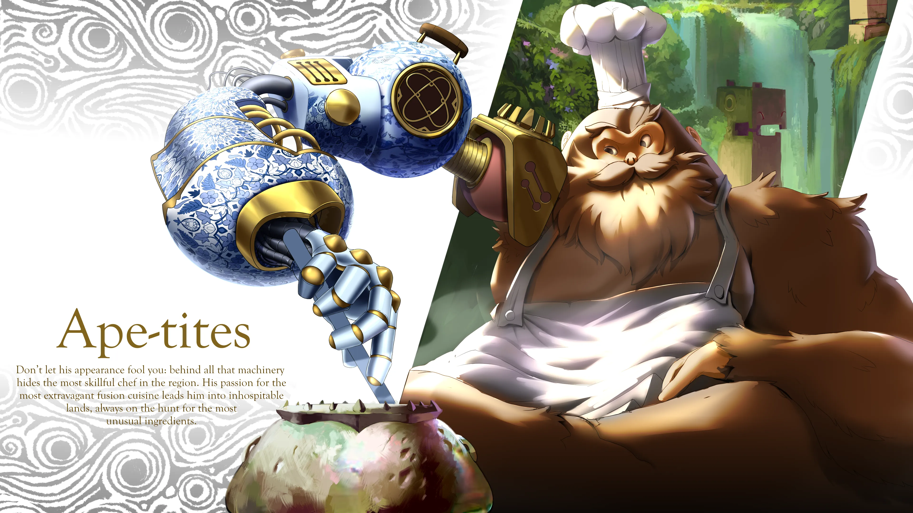
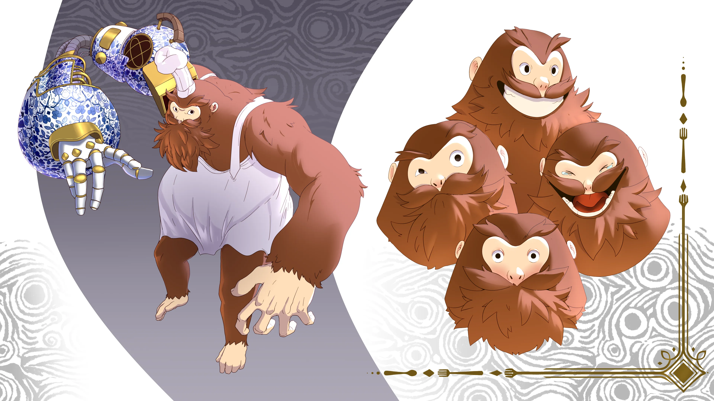
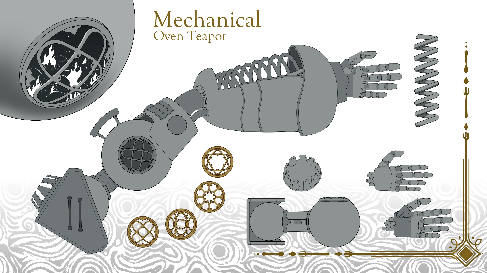

<section id="landing" class="landing-section" aria-label="Landing section">
    <div class="landing-background" aria-hidden="true">
        
        
        
        
        
        
        
    </div>
</section>
